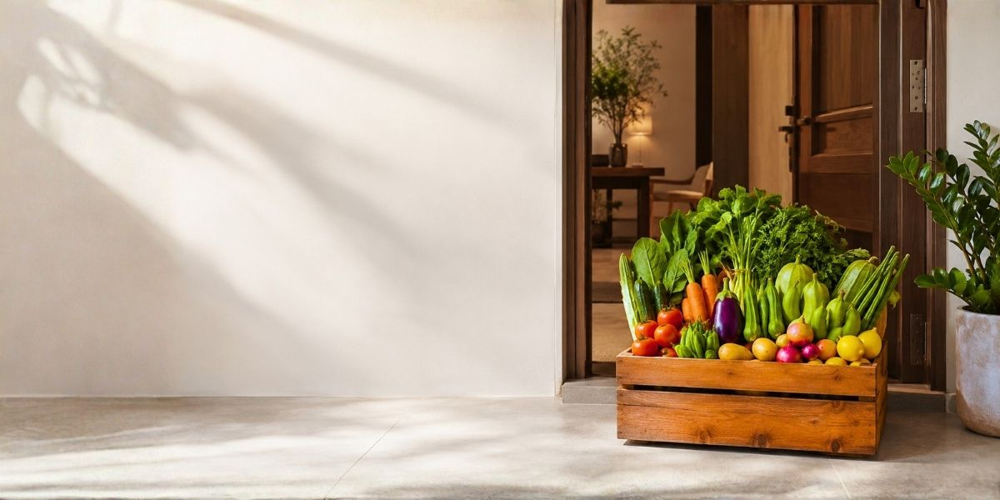

You tell us what matters
Share your household size, cooking rhythm, produce interests and preferred delivery routine.

Join the first 50 Singapore families helping us shape a more thoughtful way to enjoy 100% Natural Produce—planned around what families cook, harvested just before delivery, and brought fresh to your doorstep.
Instead of beginning with surplus stock, we begin by understanding what families actually cook, enjoy and need each week. Your Founding Harvest profile helps us plan varieties, quantities and delivery clusters with greater care.
Share your household size, cooking rhythm, produce interests and preferred delivery routine.
Family demand helps guide produce volumes, seasonal sourcing and practical launch clusters.
Produce is prepared around confirmed needs so freshness begins before the journey to your home.
A thoughtful weekly harvest arrives at your doorstep, ready for the meals your family already loves.
The first harvest is intentionally small. It allows us to understand real family routines, refine delivery clusters, learn which varieties matter most, and build the Singapore experience with care—not assumptions.
Registration takes about one minute. There is no payment or purchase commitment—only a thoughtful conversation about what your family needs.
Begin your Founding Harvest profileSeven quick steps, saved automatically as you go.